Hladna predjela
- Dimljena pastrva
- Samoborska salama
- Šunka
- Sir i vrhnje
Krčma Pri staroj vuri u samom je centru Samobora, u vili Šojki okruženoj parkom. Dimljena pastrva, zapečeni štrukli, samoborski kotlet i teleće pečenje – uz starinske satove i etnografske predmete našeg kraja.
Radnim danima i subotom 12 – 23 h, nedjeljom 11 – 18 h
Krčma Pri staroj vuri nalazi se u samom centru Samobora, u vili Šojki iz 19. stoljeća okruženoj parkom. Interijer je uređen u starom samoborskom stilu, ukrašen raznovrsnim etnografskim predmetima okolice, suvenirima i starinskim satovima.
Od davne 1980. godine, kada je lokal primio svoje prve goste, ponudom i uređenjem nastojimo zadržati nekadašnju atmosferu našeg kraja i dragim gostima približiti okuse i jedinstveni domaći ugođaj Samobora.
„Dobar tek želi Vam obitelj Šoić!”
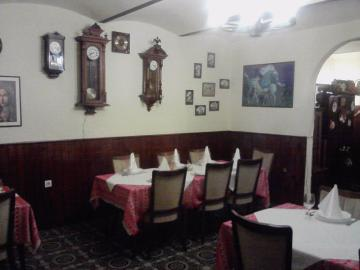
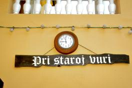
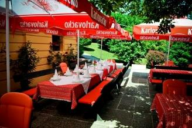
Veliki izbor jela, od hladnih predjela i štrukli do jela sa žara i pastrve na tri načina.
Vila u samom centru Samobora, okružena parkom, u kojoj se danas nalazi krčma.
Krčma Pri staroj vuri otvara vrata. Interijer u starom samoborskom stilu, s etnografskim predmetima okolice i starinskim satovima.
Ljetna terasa u sklopu objekta prima do 60 gostiju koji jedu i uživaju okruženi zelenilom.
Isti cilj kao prvog dana: zadržati nekadašnju atmosferu kraja i približiti gostima okuse Samobora.
Organiziramo sve vrste svečanosti do 45 osoba. Javite nam datum i broj gostiju, a ostalo dogovaramo zajedno.
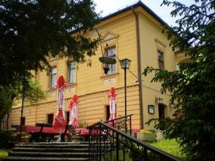
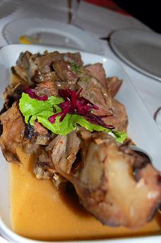
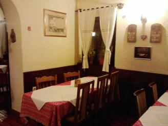
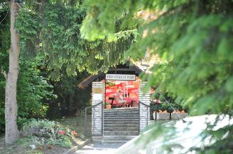
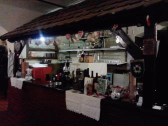
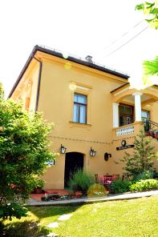
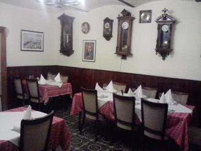
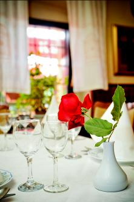
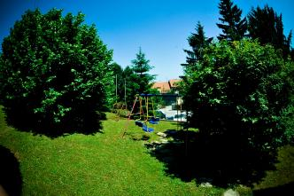
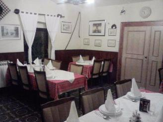
Stol možete rezervirati telefonom na 01 3360 548 ili 099 7748 404, a možete poslati i upit putem obrasca na ovoj stranici.
Radnim danima i subotom radimo od 12 do 23 sata, a nedjeljom i blagdanima od 11 do 18 sati.
Da, organiziramo sve vrste svečanosti do 45 osoba. Javite nam datum i broj gostiju pa ćemo dogovoriti detalje.
Da. U sklopu vile nalazi se ljetna terasa koja može primiti do 60 gostiju, okružena zelenilom parka.
Da. Na jelovniku je poseban jelovnik za vegetarijance (štruklova juha, štrukli, pohane tikvice, povrće na žaru, rižoto sa šampinjonima…) i dječji tanjur.
Plaćanje je moguće gotovinom i karticama.
Najbrže je nazvati. Za proslave i veća društva pošaljite upit – obrazac priprema e-poruku s vašim podacima.
| Radni dani i subota | 12 – 23 h |
| Nedjeljom i blagdanima | 11 – 18 h |